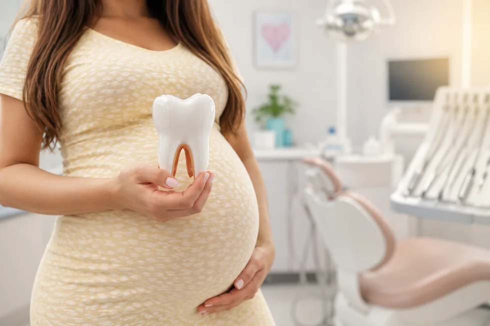
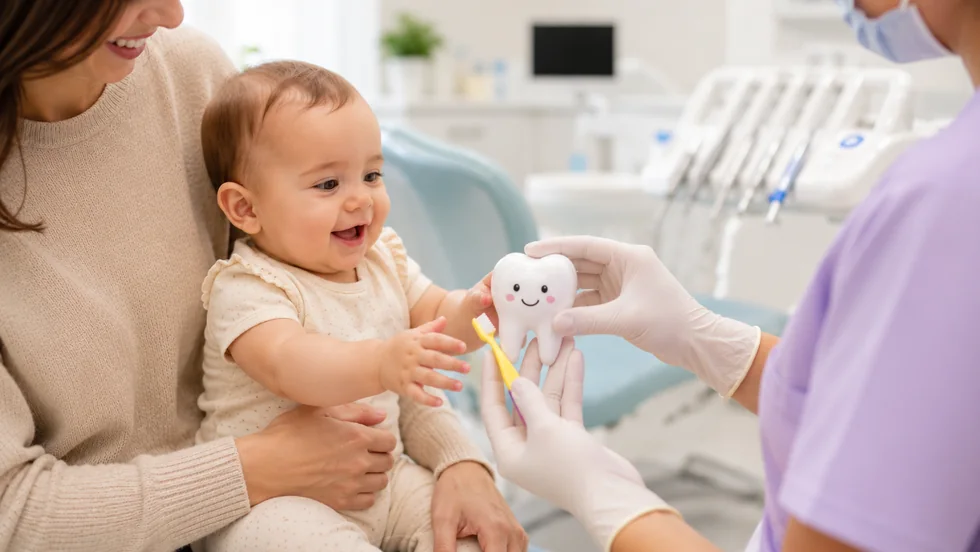
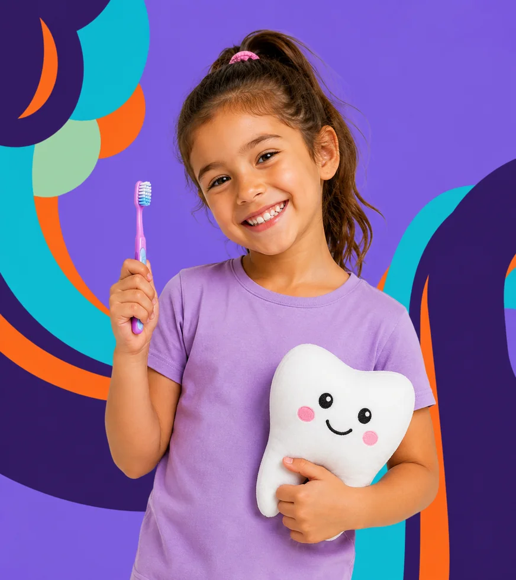
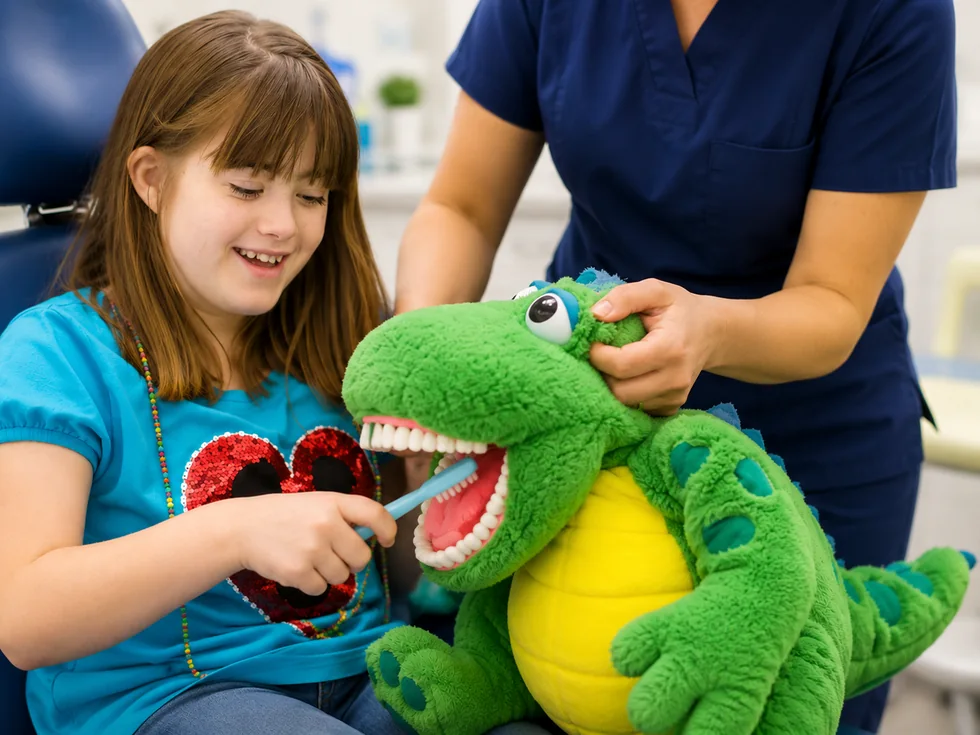

Dulce espera
Embarazadas
Orientación preventiva para cuidar tu salud bucal durante el embarazo.


Servicios
Opciones de atención pensadas para brindar calma desde el primer contacto.
Pacientes
Estas son las etapas y necesidades que atendemos en consulta.

Orientación preventiva para cuidar tu salud bucal durante el embarazo.

Primeras revisiones y guía de hábitos desde el inicio.

Controles, tratamientos y seguimiento del crecimiento dental.

Atención adaptada a tiempos, comunicación y sensibilidades.
 Agendar
Agendar